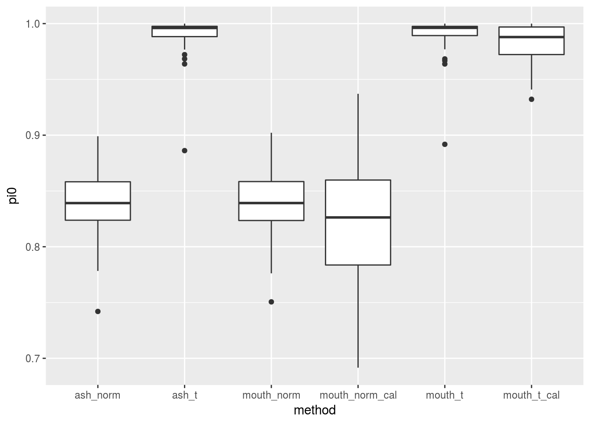
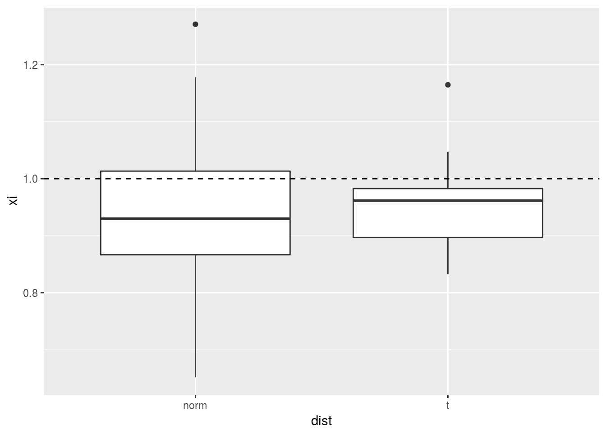
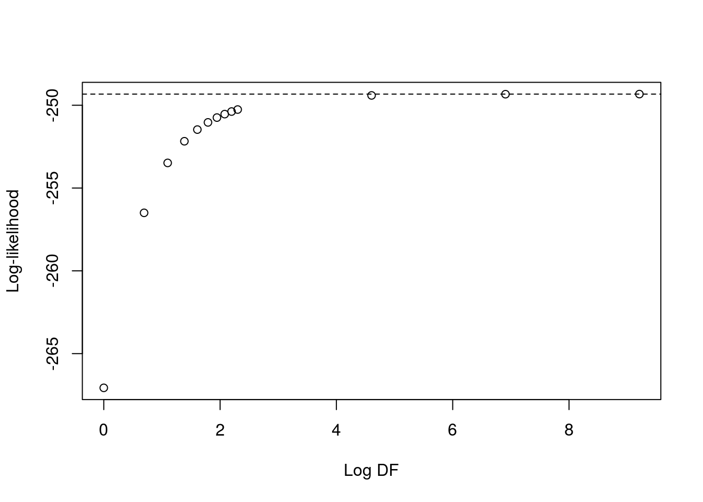

I re-run MS’s code a few times. The rest is code that I used to debug a problem. It is now solved, so it doesn’t make much sense here.
Run MS’s code a few times. This is in all-null setting with t-errors.
library("vicar")
set.seed(3)
itermax <- 30
result_mat <- matrix(NA, nrow = itermax, ncol = 8)
colnames(result_mat) <- c("pi0_ash_norm", "pi0_ash_t", "pi0_mouth_norm",
"pi0_mouth_t", "pi0_mouth_norm_cal", "pi0_mouth_t_cal",
"xi_norm", "xi_t")
for (index in 1:itermax) {
n=1000
bhat = rt(n,df=4) # t with 4 df
shat = rep(1,n)
library(ashr)
bhat.ash.t4 = ash(bhat,shat,df = 4)
bhat.ash.norm = ash(bhat,shat)
result_mat[index, 1] <- get_pi0(bhat.ash.norm)
result_mat[index, 2] <- get_pi0(bhat.ash.t4)
a = matrix(rep(1,n),nrow = n, ncol=1) # just put in an "intercept" confounder with no effect
a_seq = bhat.ash.norm$fitted_g$a
b_seq = bhat.ash.norm$fitted_g$b
lambda_seq = rep(1,length(a_seq))
lambda_seq[1] = 10
bhat.m.norm = mouthwash_second_step(bhat,shat,a,lambda_seq = lambda_seq,a_seq = a_seq,
b_seq=b_seq,mixing_dist = "uniform", likelihood="normal",
scale_var = FALSE)
bhat.m.t4 = mouthwash_second_step(bhat,shat,a,lambda_seq = lambda_seq,a_seq = a_seq,
b_seq=b_seq,mixing_dist = "uniform", likelihood="t",
scale_var = FALSE, degrees_freedom = 4)
bhat.m.norm.c = mouthwash_second_step(bhat,shat,a,lambda_seq = lambda_seq,a_seq = a_seq,
b_seq=b_seq,mixing_dist = "uniform",
likelihood="normal",
scale_var = TRUE)
bhat.m.t4.c = mouthwash_second_step(bhat,shat,a,lambda_seq = lambda_seq,a_seq = a_seq,
b_seq=b_seq,mixing_dist = "uniform", likelihood="t",
scale_var = TRUE, degrees_freedom = 4)
result_mat[index, 3] <- bhat.m.norm$pi0
result_mat[index, 4] <- bhat.m.t4$pi0
result_mat[index, 5] <- bhat.m.norm.c$pi0
result_mat[index, 6] <- bhat.m.t4.c$pi0
result_mat[index, 7] <- bhat.m.norm.c$xi
result_mat[index, 8] <- bhat.m.t4.c$xi
}Plot results. t does indeed do best. Variance inflation term seems to make things worse.
library(tidyverse)## Loading tidyverse: ggplot2
## Loading tidyverse: tibble
## Loading tidyverse: tidyr
## Loading tidyverse: readr
## Loading tidyverse: purrr
## Loading tidyverse: dplyr## Conflicts with tidy packages ----------------------------------------------## filter(): dplyr, stats
## lag(): dplyr, statslibrary(vicar)
library(ashr)
dat <- as_data_frame(result_mat) %>% select(contains("pi0_")) %>%
gather(key = "method", value = "pi0")
dat$method <- stringr::str_replace(dat$method, "pi0_", "")
ggplot(data = dat, mapping = aes(x = method, y = pi0)) +
geom_boxplot()
In real data, it is very often the case that xi is less than 1.
dat_xi <- as_data_frame(result_mat) %>% select(contains("xi")) %>%
gather(key = "dist", value = "xi")
dat_xi$dist <- stringr::str_replace(dat_xi$dist, "xi_", "")
ggplot(data = dat_xi, mapping = aes(x = dist, y = xi)) +
geom_boxplot() +
geom_hline(yintercept = 1, lty = 2)
He was using df = 100000 instead of df = Inf. Is there a big difference?
set.seed(5)
n=1000
bhat = rt(n,df=4) # t with 4 df
shat = rep(1,n)
bhat.ash.t4 = ash(bhat,shat,df = 4)
bhat.ash.norm = ash(bhat,shat)
result_mat[index, 1] <- get_pi0(bhat.ash.norm)
result_mat[index, 2] <- get_pi0(bhat.ash.t4)
a = matrix(rep(1,n),nrow = n, ncol=1) # just put in an "intercept" confounder with no effect
a_seq = bhat.ash.norm$fitted_g$a
b_seq = bhat.ash.norm$fitted_g$b
lambda_seq = rep(1,length(a_seq))
lambda_seq[1] = 10
bhat.m.norm.c = mouthwash_second_step(bhat,shat,a,lambda_seq = lambda_seq,a_seq = a_seq,
b_seq=b_seq,mixing_dist = "uniform",
likelihood="t",
scale_var = TRUE, degrees_freedom = Inf)
bhat.m.t100.c = mouthwash_second_step(bhat,shat,a,lambda_seq = lambda_seq,a_seq = a_seq,
b_seq=b_seq,mixing_dist = "uniform", likelihood="t",
scale_var = TRUE, degrees_freedom = 100)
bhat.m.t1000.c = mouthwash_second_step(bhat,shat,a,lambda_seq = lambda_seq,a_seq = a_seq,
b_seq=b_seq,mixing_dist = "uniform", likelihood="t",
scale_var = TRUE, degrees_freedom = 1000)
bhat.m.t10000.c = mouthwash_second_step(bhat,shat,a,lambda_seq = lambda_seq,a_seq = a_seq,
b_seq=b_seq,mixing_dist = "uniform", likelihood="t",
scale_var = TRUE, degrees_freedom = 10000)
bhat.m.t100000.c = mouthwash_second_step(bhat,shat,a,lambda_seq = lambda_seq,a_seq = a_seq,
b_seq=b_seq,mixing_dist = "uniform", likelihood="t",
scale_var = TRUE, degrees_freedom = 100000)
bhat.m.norm.c$xi## [1] 1.05 bhat.m.t100.c$xi## [1] 1.056 bhat.m.t1000.c$xi## [1] 1.051 bhat.m.t10000.c$xi## [1] 1.05 bhat.m.t100000.c$xi## [1] 1.05Here is an example internal dataset from mouthwash_second_step
example_list <- readRDS(file = "../data/example_list.RDS")
str(example_list)## List of 9
## $ betahat : num [1:1000] -1.729 -1.641 -0.484 -1.397 -1.274 ...
## $ sebetahat : num [1:1000] 1.53 1.53 1.53 1.53 1.53 ...
## $ df : num Inf
## $ prior : chr "nullbiased"
## $ nullweight : num 10
## $ g :List of 3
## ..$ pi: num [1:18] 9.60e-01 1.57e-12 1.57e-12 1.57e-12 1.57e-12 ...
## ..$ a : num [1:18] 0 -0.0841 -0.1189 -0.1682 -0.2378 ...
## ..$ b : num [1:18] 0 0.0841 0.1189 0.1682 0.2378 ...
## ..- attr(*, "row.names")= int [1:18] 1 2 3 4 5 6 7 8 9 10 ...
## ..- attr(*, "class")= chr "unimix"
## $ fixg : logi TRUE
## $ mixcompdist: chr "halfuniform"
## $ alpha : num 0I’ll run ashr.workhorse under the settings with df = NULL and df = 100000.
val1 <- ashr::ash.workhorse(betahat = example_list$betahat,
sebetahat = example_list$sebetahat,
df = NULL,
prior = "nullbiased",
nullweight = 10,
g = example_list$g,
fixg = FALSE,
mixcompdist = "halfuniform",
alpha = 0)
ashr::get_pi0(val1)## [1] 0.9595val2 <- ashr::ash.workhorse(betahat = example_list$betahat,
sebetahat = example_list$sebetahat,
df = 100000,
prior = "nullbiased",
nullweight = 10,
g = example_list$g,
fixg = FALSE,
mixcompdist = "halfuniform",
alpha = 0)
max(val2$fitted_g$pi - val1$fitted_g$pi)## [1] 6.212e-06uniform_mix_llike?The log-likelihood does not seem to be at fault here.
rm(list = ls())
set.seed(991)
p <- 103
k <- 3
S_diag <- stats::rchisq(p, 5) / 5
alpha_tilde <- matrix(stats::rnorm(k * p), nrow = p)
z2 <- matrix(stats::rnorm(k), ncol = 1)
beta <- matrix(stats::rnorm(p), ncol = 1)
betahat_ols <- beta + alpha_tilde %*% z2 + rnorm(p, mean = 0, sd = sqrt(S_diag))
M <- 23
a_seq <- seq(-10, 0, length = M)
b_seq <- seq(10, 0, length = M)
lambda_seq <- rep(1, M)
lambda_seq[length(lambda_seq)] <- 10
pi_vals <- rep(1 / M, length = M)
xi <- 1
degrees_freedom <- 3
scale_var <- TRUE
pi_init_type <- "zero_conc"
df_vec <- c(1:10, 100, 1000, 10000, Inf)
llike_vec <- rep(NA, length = length(df_vec))
for (index in 1:length(df_vec)) {
llike_vec[index] <- vicar:::uniform_mix_llike(pi_vals = pi_vals, z2 = z2, xi = xi,
betahat_ols = betahat_ols, S_diag = S_diag,
alpha_tilde = alpha_tilde, a_seq = a_seq, b_seq = b_seq,
lambda_seq = lambda_seq,
degrees_freedom = df_vec[index])
}
plot(log(df_vec), llike_vec, xlab = "Log DF", ylab = "Log-likelihood")
abline(h = llike_vec[df_vec == Inf], lty = 2)
mout1 <- vicar:::mouthwash_coordinate(pi_init = pi_vals, z_init = z2, xi_init = 1,
betahat_ols = betahat_ols, S_diag = S_diag,
alpha_tilde = alpha_tilde, a_seq = a_seq,
b_seq = b_seq, lambda_seq = lambda_seq,
degrees_freedom = Inf, scale_var = TRUE,
tol = 10 ^ -6, maxit = 100, plot_update = FALSE)
mout2 <- vicar:::mouthwash_coordinate(pi_init = pi_vals, z_init = z2, xi_init = 1,
betahat_ols = betahat_ols, S_diag = S_diag,
alpha_tilde = alpha_tilde, a_seq = a_seq,
b_seq = b_seq, lambda_seq = lambda_seq,
degrees_freedom = 100000, scale_var = TRUE,
tol = 10 ^ -6, maxit = 100, plot_update = FALSE)
mout1## $pi_vals
## [1] 2.829e-11 2.953e-11 3.101e-11 3.279e-11 3.495e-11 3.766e-11 4.113e-11
## [8] 4.572e-11 5.206e-11 6.130e-11 7.588e-11 1.016e-10 1.555e-10 3.025e-10
## [15] 9.168e-10 1.906e-02 1.729e-01 3.128e-09 1.024e-09 4.499e-10 2.686e-10
## [22] 2.102e-10 8.081e-01
##
## $z2
## [,1]
## [1,] -0.1997
## [2,] 0.8706
## [3,] 0.1781
##
## $xi
## [1] 1.754mout2## $pi_vals
## [1] 2.832e-11 2.957e-11 3.105e-11 3.282e-11 3.500e-11 3.771e-11 4.118e-11
## [8] 4.578e-11 5.212e-11 6.137e-11 7.597e-11 1.017e-10 1.557e-10 3.029e-10
## [15] 9.180e-10 1.906e-02 1.729e-01 3.132e-09 1.025e-09 4.504e-10 2.689e-10
## [22] 2.104e-10 8.081e-01
##
## $z2
## [,1]
## [1,] -0.1997
## [2,] 0.8706
## [3,] 0.1781
##
## $xi
## [1] 1.754The scale estimate part seems to be OK
optim_out1 <- stats::optim(par = 1, fn = vicar:::uniform_mix_llike, method = "Brent",
lower = 10 ^ -14, upper = 10,
pi_vals = pi_vals, z2 = z2, betahat_ols = betahat_ols,
S_diag = S_diag, alpha_tilde = alpha_tilde, a_seq = a_seq,
b_seq = b_seq, lambda_seq = lambda_seq,
degrees_freedom = Inf,
control = list(fnscale = -1))
optim_out2 <- stats::optim(par = 1, fn = vicar:::uniform_mix_llike, method = "Brent",
lower = 10 ^ -14, upper = 10,
pi_vals = pi_vals, z2 = z2, betahat_ols = betahat_ols,
S_diag = S_diag, alpha_tilde = alpha_tilde, a_seq = a_seq,
b_seq = b_seq, lambda_seq = lambda_seq,
degrees_freedom = 10000,
control = list(fnscale = -1))
optim_out1$par## [1] 0.1662optim_out2$par## [1] 0.1661The problem seems to be with the step where I estimate the confounders
optim_out1 <- stats::optim(par = z2, fn = vicar:::uniform_mix_llike,
gr = vicar:::mouthwash_z_grad, method = "BFGS",
pi_vals = pi_vals, xi = xi, betahat_ols = betahat_ols,
S_diag = S_diag, alpha_tilde = alpha_tilde, a_seq = a_seq,
b_seq = b_seq, lambda_seq = lambda_seq,
degrees_freedom = Inf,
control = list(fnscale = -1))
optim_out2 <- stats::optim(par = z2, fn = vicar:::uniform_mix_llike,
gr = vicar:::mouthwash_z_grad, method = "BFGS",
pi_vals = pi_vals, xi = xi, betahat_ols = betahat_ols,
S_diag = S_diag, alpha_tilde = alpha_tilde, a_seq = a_seq,
b_seq = b_seq, lambda_seq = lambda_seq,
degrees_freedom = 100000,
control = list(fnscale = -1))
optim_out1$par## [,1]
## [1,] -0.2593
## [2,] 0.8577
## [3,] 0.1413optim_out2$par## [,1]
## [1,] -0.2593
## [2,] 0.8577
## [3,] 0.1413optim_out1$value## [1] -248.7optim_out2$value## [1] -248.7rm(list = ls())
set.seed(991)
p <- 103
k <- 3
S_diag <- stats::rchisq(p, 5) / 5
alpha_tilde <- matrix(stats::rnorm(k * p), nrow = p)
z2 <- matrix(stats::rnorm(k), ncol = 1)
beta <- matrix(stats::rnorm(p), ncol = 1)
betahat_ols <- beta + alpha_tilde %*% z2 + rnorm(p, mean = 0, sd = sqrt(S_diag))
M <- 23
a_seq <- seq(-10, 0, length = M)
b_seq <- seq(10, 0, length = M)
lambda_seq <- rep(1, M)
lambda_seq[length(lambda_seq)] <- 10
pi_vals <- rep(1 / M, length = M)
xi <- 1
degrees_freedom <- 3
scale_var <- TRUE
pi_init_type <- "zero_conc"
df_vec <- c(1:10, 100, 1000, 10000, Inf)
grad_matrix <- matrix(NA, nrow = length(df_vec), ncol = k)
for (index in 1:length(df_vec)) {
grad_matrix[index, ] <- vicar:::mouthwash_z_grad(pi_vals = pi_vals, z2 = z2, xi = xi,
betahat_ols = betahat_ols, S_diag = S_diag,
alpha_tilde = alpha_tilde, a_seq = a_seq, b_seq = b_seq,
lambda_seq = lambda_seq,
degrees_freedom = df_vec[index])
}
grad_matrix## [,1] [,2] [,3]
## [1,] -1.152 1.158 -3.930
## [2,] -1.327 1.493 -4.185
## [3,] -1.450 1.648 -4.345
## [4,] -1.538 1.735 -4.445
## [5,] -1.603 1.789 -4.510
## [6,] -1.653 1.826 -4.556
## [7,] -1.693 1.852 -4.590
## [8,] -1.724 1.871 -4.615
## [9,] -1.750 1.885 -4.635
## [10,] -1.771 1.896 -4.651
## [11,] -1.978 1.973 -4.773
## [12,] -2.002 1.978 -4.783
## [13,] -2.004 1.979 -4.784
## [14,] -2.005 1.979 -4.784sessionInfo()## R version 3.3.2 (2016-10-31)
## Platform: x86_64-pc-linux-gnu (64-bit)
## Running under: Ubuntu 16.04.2 LTS
##
## locale:
## [1] LC_CTYPE=en_US.UTF-8 LC_NUMERIC=C
## [3] LC_TIME=en_US.UTF-8 LC_COLLATE=en_US.UTF-8
## [5] LC_MONETARY=en_US.UTF-8 LC_MESSAGES=en_US.UTF-8
## [7] LC_PAPER=en_US.UTF-8 LC_NAME=C
## [9] LC_ADDRESS=C LC_TELEPHONE=C
## [11] LC_MEASUREMENT=en_US.UTF-8 LC_IDENTIFICATION=C
##
## attached base packages:
## [1] stats graphics grDevices utils datasets methods base
##
## other attached packages:
## [1] dplyr_0.5.0 purrr_0.2.2 readr_1.0.0 tidyr_0.6.1
## [5] tibble_1.2 ggplot2_2.2.1 tidyverse_1.1.1 ashr_2.0.5
## [9] vicar_0.1.6
##
## loaded via a namespace (and not attached):
## [1] reshape2_1.4.2 haven_1.0.0 lattice_0.20-34
## [4] Rmosek_7.1.3 colorspace_1.3-2 htmltools_0.3.5
## [7] yaml_2.1.14 foreign_0.8-67 DBI_0.6
## [10] REBayes_0.73 modelr_0.1.0 readxl_0.1.1
## [13] foreach_1.4.3 plyr_1.8.4 stringr_1.2.0
## [16] munsell_0.4.3 gtable_0.2.0 rvest_0.3.2
## [19] codetools_0.2-15 psych_1.6.12 evaluate_0.10
## [22] labeling_0.3 knitr_1.15.1 forcats_0.2.0
## [25] doParallel_1.0.10 pscl_1.4.9 parallel_3.3.2
## [28] broom_0.4.2 Rcpp_0.12.10 backports_1.0.5
## [31] scales_0.4.1 jsonlite_1.3 truncnorm_1.0-7
## [34] mnormt_1.5-5 hms_0.3 digest_0.6.12
## [37] stringi_1.1.2 etrunct_0.1 grid_3.3.2
## [40] rprojroot_1.2 tools_3.3.2 magrittr_1.5
## [43] lazyeval_0.2.0 MASS_7.3-45 Matrix_1.2-8
## [46] xml2_1.1.1 SQUAREM_2016.8-2 lubridate_1.6.0
## [49] assertthat_0.2.0 rmarkdown_1.3 httr_1.2.1
## [52] iterators_1.0.8 R6_2.2.0 nlme_3.1-131This site was created with R Markdown